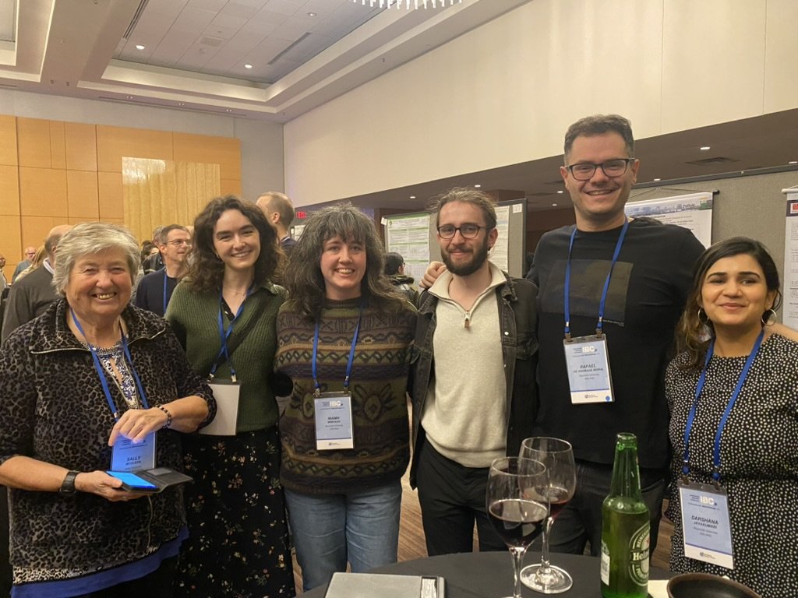

Gallery

Secret Santa Xmas 2021

Celebrating Estevão’s successful viva
Celebrating Niamh’s successful viva

Lunch at the Coffee Mill (Maynooth, Co. Kildare)
Theoretical and Statistical Ecology at Rafael’s wedding
Darshana presenting at CASI 2022
Niamh presenting at CASI 2022
Blake presenting at CASI 2022
Gabriel presenting at CASI 2022
The Young-ISA committee at CASI 2023
Precious friends at CASI 2023
Blake, Darshana, Niamh, and Gabriel at the poster session at CASI 2023 (wine mandatory)
The marriage between Theoretical and Statistical Ecology
The Chair of the Younger-ISA (under 1s) at CASI 2023
Darshana’s poster at the IWSM 2023 (beer mandatory)
Gabriel presenting at the IWSM 2023
Idemauro presenting at the IWSM 2023
Visiting the Borussia Dortmund stadium
TSE goes merry-go-round
Roller coaster stats at Phantasialand
Amidst a very serious conversation

Stuck at Düsseldorf Airport
Niamh’s graduation
Secret Santa Xmas 2023
The TSE Kind Suggestions Workshop 2024
TSE meets Immunology at Institut Pasteur

I love Statistics this much
Gabriel at the Immunological Data Analysis and Integration Symposium & Workshop at Institut Pasteur
Anna Mara presenting at CASI 2024
Cathal’s graduation day
Invited keynote talk at CETL-MSOR 2024 at the University of Limerick
Rachel receiving an award at Maynooth University as an IRC-EPS grant holder
Generalized linear mixed models visit Laimburg Research Centre in South Tyrol, Italy

Dr Alessandra Lemos, the final version of her thesis, and a very proud supervisor
Celebrating Darshana’s successful viva
Statistical cloud berries with Zahra, Ida and Ingeborg in Ås Bistro
TSE goes to the USA for the International Biometric Conference 2024

Poster session at the IBC 2024 in Atlanta, USA
Rafael presenting at the IBC 2024 in Atlanta, USA
Darshana presenting at the IBC 2024 in Atlanta, USA
Niamh presenting at the IBC 2024 in Atlanta, USA
Idemauro presenting at the IBC 2024 in Atlanta, USA
TSE visits the Atlanta Centennial Olympic Park
More roller coaster stats at Six Flags Over Georgia

Young (at heart) statisticians’ reception at IBC 2024
Underwater stats at Georgia Aquarium
Cormac and Darshana supporting each other’s photos at Georgia Aquarium
Secret Santa Xmas 2024

Visiting Hideyasu in Tokyo 2025
At the Symposium in Environmental Statistics, Institute of Statistical Mathematics, Tokyo
Visiting the Data Modelling Group, Kitasato University, Tokyo
Rafael and the Data Modelling Group at Shibuya Crossing
Some psychic statistics at Pokemon Center
A very statistical guitar lick
A statistical audience at Maynooth Students’ Union (1)
A statistical audience at Maynooth Students’ Union (2)
Skew 2 – the band
After a successful charity concert organised by the Data Science Society
A Markovian talk by Cormac at Durham
Rachel and her poster at CASI 2025
Cormac and his poster at CASI 2025